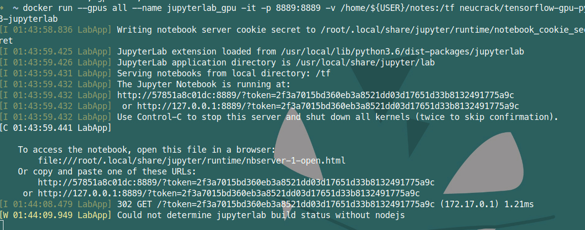

TensorFlow Linux GPU + jupyterlab 环境安装 （Docker） (Ubuntu Deepin Manjaro)
版权声明：本文为 neucrack 的原创文章，遵循 CC 4.0 BY-SA 版权协议，转载请附上原文出处链接及本声明。
原文链接：https://neucrack.com/p/116
这里使用 docker ， 安装环境更加简单（只需要装 NVIDIA 驱动，不需要装cuda，当然也不用为cuda版本烦恼）稳定～
而且可以同时运行多个 docker，比如同时运行多个 jupyterlab 给不同人使用
安装docker
安装 docker，版本必须是19.03及以上（可以使用docker --version 查看），如果版本低于这个版本，后面使用nvidia-docker 驱动就会失败，会提示找不到--gpu all 参数
安装
- 如果是Manjaro， 直接
yay -S docker - 其他发行版：
参见官方教程：https://docs.docker.com/install/linux/docker-ce/debian/
deepin 是基于 debian 9.0
如果是 deepin 则需要修改sudo vim /usr/share/python-apt/templates/Deepin.info里面的unstable为stable
并使用命令sudo add-apt-repository "deb [arch=amd64] https://download.docker.com/linux/debian stretch stable"
设置代理
如果下载慢，可能需要设置代理， 也可以不使用官方镜像，使用国内的镜像，比如 daocloud 镜像加速
docker 代理设置参考： https://neucrack.com/p/286
pull 镜像的时候可以设置代理让拉取更快， 创建容器时建议将代理去掉
设置当前用户可以访问docker（非root）
参考这里： https://docs.docker.com/install/linux/linux-postinstall/
sudo groupadd docker
sudo usermod -aG docker $USER
newgrp docker # 或者重新开启终端即可，如果未生效，可重启
常用命令
docker images: 列出镜像列表
docker run [options] image_name [command]：从镜像新建一个容器
docker ps: 正在运行的容器
docker ps -a: 所有容器，包括没有正在运行的
docker rm container_name：删除容器
docker rmi image_name：删除镜像
docker start container_name：启动容器
docker attatch container_name：附着到容器里
docker exec conrainer_name [comand]：在容器中执行命令
docker logs container_name: 查看容器执行log
docker build -t image_name .：从 Dockerfile 构建一个镜像
docker run 常用参数
-it：启用交互式终端
-rm：及时删除，不保存容器，即退出后就删除
--gpus all：启用所有GPU支持
-p port1:port2：宿主机和容器端口映射，port1为宿主机的端口
-v volume1:volume2：宿主机和容器的磁盘映射， volume1是宿主机的文件夹，比如映射/home/${USER}/notes到/tf/notes
--name name：给容器取名，如果没有这个参数，名字就是随机生成的
--device device:container_device：挂在设备，比如/dev/ttyUSB0:/dev/ttyUSB0
--network=host： 使用宿主机的网络
--restart: 自动启动, 可以用这个设置开机自启, 如果run的时候忘了可以用docker update --restart=always 容器名来更新
no: 不自动重启容器. (默认value)
on-failure: 容器发生error而退出(容器退出状态不为0)重启容器
unless-stopped: 在容器已经stop掉或Docker stoped/restarted的时候才重启容器
always: 在容器已经stop掉或Docker stoped/restarted的时候才重启容器
安装显卡驱动
显卡安装部分独立写了一篇， 参考Linux Nvidia显卡安装
安装镜像
参考官方文档：https://www.tensorflow.org/install/docker
比如我这里Ubuntu：（一定看文档，可能会不一样，有更新）
按照 readme 中的installation guide 安装即可， 比如 Ubuntu：
# Add the package repositories
distribution=$(. /etc/os-release;echo $ID$VERSION_ID)
curl -s -L https://nvidia.github.io/nvidia-docker/gpgkey | sudo apt-key add -
curl -s -L https://nvidia.github.io/nvidia-docker/$distribution/nvidia-docker.list | sudo tee /etc/apt/sources.list.d/nvidia-docker.list
sudo apt-get update && sudo apt-get install -y nvidia-container-toolkit
sudo systemctl restart docker
如果是deepin，则需要改一下系统版本
distribution="ubuntu18.04"
curl -s -L https://nvidia.github.io/nvidia-docker/gpgkey | sudo apt-key add -
curl -s -L https://nvidia.github.io/nvidia-docker/$distribution/nvidia-docker.list | sudo tee /etc/apt/sources.list.d/nvidia-docker.list
sudo apt-get update && sudo apt-get install -y nvidia-container-toolkit
sudo systemctl restart docker
如果是 Manjaro， 只需要命令 yay -S nvidia-docker 即可！（如果遇到下载慢，可以使用poipo设置全局代理，参考终端代理设置方法）
- 测试 nvidia-docker 以及cuda能不能使用起来
使用nvidia/cuda这个镜像，这个镜像只是用来测试，用完也可以删掉，如果没有设置代理，不想花费太多时间拉取镜像，可以不用这个镜像，直接使用tensorflow/tensorflow:latest-gpu-py3这个镜像或者neucrack/tensorflow-gpu-py3-jupyterlab(或 daocloud.io/neucrack/tensorflow-gpu-py3-jupyterlab)这个镜像（推荐）（在前者的基础上装了jupyterlab， 而且做了更好的用户权限管理）
lspci | grep -i nvidia
docker run --gpus all --rm nvidia/cuda nvidia-smi
比如：
➜ ~ sudo docker run --gpus all --rm nvidia/cuda nvidia-smi
Tue Mar 10 15:57:12 2020
+-----------------------------------------------------------------------------+
| NVIDIA-SMI 440.64 Driver Version: 440.64 CUDA Version: 10.2 |
|-------------------------------+----------------------+----------------------+
| GPU Name Persistence-M| Bus-Id Disp.A | Volatile Uncorr. ECC |
| Fan Temp Perf Pwr:Usage/Cap| Memory-Usage | GPU-Util Compute M. |
|===============================+======================+======================|
| 0 GeForce GTX 106... Off | 00000000:01:00.0 On | N/A |
| 33% 39C P0 27W / 120W | 310MiB / 6075MiB | 0% Default |
+-------------------------------+----------------------+----------------------+
+-----------------------------------------------------------------------------+
| Processes: GPU Memory |
| GPU PID Type Process name Usage |
|=============================================================================|
+-----------------------------------------------------------------------------+
Wed Mar 11 02:04:26 2020
+-----------------------------------------------------------------------------+
| NVIDIA-SMI 430.40 Driver Version: 430.40 CUDA Version: 10.1 |
|-------------------------------+----------------------+----------------------+
| GPU Name Persistence-M| Bus-Id Disp.A | Volatile Uncorr. ECC |
| Fan Temp Perf Pwr:Usage/Cap| Memory-Usage | GPU-Util Compute M. |
|===============================+======================+======================|
| 0 GeForce GTX 108... Off | 00000000:04:00.0 Off | N/A |
| 35% 41C P5 25W / 250W | 0MiB / 11178MiB | 0% Default |
+-------------------------------+----------------------+----------------------+
| 1 GeForce GTX 108... Off | 00000000:81:00.0 Off | N/A |
| 39% 36C P5 19W / 250W | 0MiB / 11178MiB | 2% Default |
+-------------------------------+----------------------+----------------------+
+-----------------------------------------------------------------------------+
| Processes: GPU Memory |
| GPU PID Type Process name Usage |
|=============================================================================|
| No running processes found |
+-----------------------------------------------------------------------------+
如果驱动版本太低，这里就会提示需要更新驱动
同时注意到cuda版本是10.2，可能tensorflow只支持到10.1，如果是在宿主机上直接装tensorflow就会报错不支持，这里用docker的好处就体现了，不用理会，只需要保证驱动装好就可以了
deepin 出现了错误
docker: Error response from daemon: OCI runtime create failed: container_linux.go:349: starting container process caused "process_linux.go:449: container init caused \"process_linux.go:432: running prestart hook 0 caused \\\"error running hook: exit status 1, stdout: , stderr: nvidia-container-cli: ldcache error: open failed: /sbin/ldconfig.real: no such file or directory\\\\n\\\"\"": unknown.
参考这里的解决方法：https://github.com/NVIDIA/nvidia-docker/issues/614 ，解决：
ln -s /sbin/ldconfig /sbin/ldconfig.real
docker 出现错误：nvidia-container-cli: initialization error: cuda error: unknown error
重启系统得到解决
运行 tensorflow with GPU
拉取镜像，直接拉取
docker pull neucrack/tensorflow-gpu-py3-jupyterlab
# docker pull tensorflow/tensorflow:latest-gpu-py3-jupyter
# docker pull tensorflow/tensorflow
# docker pull tensorflow/tensorflow:latest-gpu
国内可以使用放在 daocloud 的镜像，速度会快一些：
docker pull daocloud.io/neucrack/tensorflow-gpu-py3-jupyterlab
执行测试语句：
docker run --gpus all -it --rm neucrack/tensorflow-gpu-py3-jupyterlab python -c "import tensorflow as tf; print('-----version:{}, gpu:{}, 1+2={}'.format(tf.__version__, tf.test.is_gpu_available(), tf.add(1, 2).numpy()) );"
如果使用了daocloud，镜像名需要修改成
daocloud.io/neucrack/tensorflow-gpu-py3-jupyterlab
如果没问题，就会出现以下输出（会伴随一大堆调试信息，也可能有警告信息，可以仔细看一下）：
-----version:2.1.0, gpu:True, 1+2=3
Jupyterlab
docker run --gpus all --name jupyterlab-gpu -it -p 8889:8889 -e USER_NAME=$USER -e USER_ID=`id -u $USER` -e GROUP_NAME=`id -gn $USER` -e GROUP_ID=`id -g $USER` -v /home/${USER}:/tf neucrack/tensorflow-gpu-py3-jupyterlab
如果使用了daocloud，镜像名需要修改成
daocloud.io/neucrack/tensorflow-gpu-py3-jupyterlab
然后就能用浏览器在http://127.0.0.1:8889/地址使用 jupyterlab了，而且目录对应了设置的/home/${USER}目录


退出直接Ctrl+C即可
这个容器创建后会一直存在于电脑里，可以使用docker ps -a查看到，下次启动使用
docker start jupyterlab_gpu
也可以附着到容器：
docker attatch jupyterlab_gpu
停止容器：
docker stop jupyterlab_gpu
删除容器：
docker rm jupyterlab_gpu
修改 user 和 root 密码, 这样就可以使用 sudo 命令了
docker exec -it jupyterlab_gpu /bin/bash
passwd $USER
passwd root
如果需要每次都重新新建一个容器，用完就删除，只需要在run命令后面添加一个-rm参数即可
其它问题
- 运行程序时提示： ResourceExhaustedError: OOM when allocating tensor with shape[784,128]
使用nvidia-smi查看内存使用情况
tensorflow会一次性申请（几乎）所有显存：
➜ ~ nvidia-smi
Fri Mar 20 09:18:48 2020
+-----------------------------------------------------------------------------+
| NVIDIA-SMI 435.21 Driver Version: 435.21 CUDA Version: 10.1 |
|-------------------------------+----------------------+----------------------+
| GPU Name Persistence-M| Bus-Id Disp.A | Volatile Uncorr. ECC |
| Fan Temp Perf Pwr:Usage/Cap| Memory-Usage | GPU-Util Compute M. |
|===============================+======================+======================|
| 0 GeForce GTX 108... Off | 00000000:04:00.0 On | N/A |
| 0% 48C P2 60W / 250W | 10726MiB / 11178MiB | 0% Default |
+-------------------------------+----------------------+----------------------+
| 1 GeForce GTX 108... Off | 00000000:81:00.0 Off | N/A |
| 0% 47C P2 58W / 250W | 197MiB / 11178MiB | 0% Default |
+-------------------------------+----------------------+----------------------+
+-----------------------------------------------------------------------------+
| Processes: GPU Memory |
| GPU PID Type Process name Usage |
|=============================================================================|
| 0 3099 G /usr/lib/xorg/Xorg 21MiB |
| 0 40037 C /usr/bin/python3 10693MiB |
| 1 40037 C /usr/bin/python3 185MiB |
+-----------------------------------------------------------------------------+
有可能是使用显存的进程太多了，可以适当退出一些进程；
也有可能申请内存重复了 ，可以尝试重启容器解决
- 一直运行没有结果
重启docker 容器解决，总之遇事不决，重启解决。。
- 提示
could not retrieve CUDA device count: CUDA_ERROR_NOT_INITIALIZED
可能使用了多进程, 新的进程直接拷贝了当前进程的环境,导致错误, 解决办法是父进程需要引入, 在子进程中需要使用的时候单独import,而不是写到全局, 参考这里: https://abcdabcd987.com/python-multiprocessing/
ImportError: libGL.so.1: cannot open shared object file: No such file or directory
apt install libgl1-mesa-glx
Failed to get convolution algorithm. This is probably because cuDNN failed to initialize
显卡内存不足，检查是不是被其它程序占用了，如果多张显卡，可以设置环境变量CUDA_VISIBLE_DEVICES来设置将要使用的显卡， 比如这里共有三张显卡， 下标分别是0，1，2， 选择第三张卡则设置为2
import os
os.environ["CUDA_VISIBLE_DEVICES"] = '2'